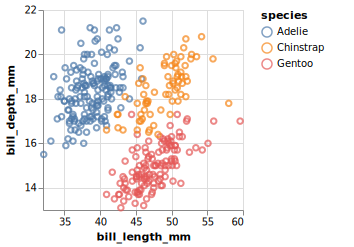

The goal of vegadown is to help you compose Vega and Vega-Lite specs within RMarkdown documents.
The audience for this package are people who are already comfortable with Vega-Lite JSON specs. Compared with using the vegawiget package alone, vegadown offers a quicker, more minimal, environment for developing specs. However, it still does not provide humane feedback when something goes wrong.
Installation
This package is not (yet) on CRAN. You can install the development version from GitHub with:
# install.packages("devtools")
devtools::install_github("vegawidget/vegadown")Example
Using vegawidget alone, it can be a bit awkward to compose specs using lists.
Using this package, you can compose using JSON or YAML within RMarkdown chunks by specifying the chunk’s language as vegajson or vegayaml (vegayml). You can interpolate objects from your R environment by using the delimiters ${}, much like you would using the glue package.
Here’s what your code chunk would look like:
```{vegajson json-cars}
{
"$schema": "${vega_schema()}",
"data": {"values": "${penguins}"},
"mark": "point",
"encoding": {
"x": {
"field": "bill_length_mm",
"type": "quantitative",
"scale": {"zero": false}
},
"y": {
"field": "bill_depth_mm",
"type": "quantitative",
"scale": {"zero": false}
},
"color": {"field": "species", "type": "nominal"}
}
}
```Here’s how it would appear:

You can access your vegaspecs elsewhere in your RMarkdown document, using the vegadown() function with the chunk label:
str(vegadown("json-penguins"))
#> List of 4
#> $ $schema : chr "https://vega.github.io/schema/vega-lite/v4.json"
#> $ data :List of 1
#> ..$ values: tibble [344 × 8] (S3: tbl_df/tbl/data.frame)
#> .. ..$ species : Factor w/ 3 levels "Adelie","Chinstrap",..: 1 1 1 1 1 1 1 1 1 1 ...
#> .. ..$ island : Factor w/ 3 levels "Biscoe","Dream",..: 3 3 3 3 3 3 3 3 3 3 ...
#> .. ..$ bill_length_mm : num [1:344] 39.1 39.5 40.3 NA 36.7 39.3 38.9 39.2 34.1 42 ...
#> .. ..$ bill_depth_mm : num [1:344] 18.7 17.4 18 NA 19.3 20.6 17.8 19.6 18.1 20.2 ...
#> .. ..$ flipper_length_mm: int [1:344] 181 186 195 NA 193 190 181 195 193 190 ...
#> .. ..$ body_mass_g : int [1:344] 3750 3800 3250 NA 3450 3650 3625 4675 3475 4250 ...
#> .. ..$ sex : Factor w/ 2 levels "female","male": 2 1 1 NA 1 2 1 2 NA NA ...
#> .. ..$ year : int [1:344] 2007 2007 2007 2007 2007 2007 2007 2007 2007 2007 ...
#> $ mark : chr "point"
#> $ encoding:List of 3
#> ..$ x :List of 3
#> .. ..$ field: chr "bill_length_mm"
#> .. ..$ type : chr "quantitative"
#> .. ..$ scale:List of 1
#> .. .. ..$ zero: logi FALSE
#> ..$ y :List of 3
#> .. ..$ field: chr "bill_depth_mm"
#> .. ..$ type : chr "quantitative"
#> .. ..$ scale:List of 1
#> .. .. ..$ zero: logi FALSE
#> ..$ color:List of 2
#> .. ..$ field: chr "species"
#> .. ..$ type : chr "nominal"
#> - attr(*, "class")= chr [1:4] "vegaspec_unit" "vegaspec_vega_lite" "vegaspec" "list"For more detail, please see the getting started article, which also shows:
- how to compose a vegaspec using YAML.
- more details on interpolating objects from your R environment into
vegajsonorvegayaml(vegayml).
Code of Conduct
Please note that the vegadown project is released with a Contributor Code of Conduct. By contributing to this project, you agree to abide by its terms.